Your digimon in digimon world will be some sort of tamagotchi, he needs to be taken care of. His needs will be shown as a bubble on top of his head, or you can see them in the digimon menu.
Your digimon can get hungry, sleepy, tired and he needs to poop. He also has a mood bar (he can be happy or get angry). You can praise or discipline your digimon.
Digimons have lifespawn, which means it will die after a certain amount of time. If they lose a battle, you will lose one heart. Digimon has three hearts, after you lose all hearts, your digimon will also perish and turn into an egg.
Even if the digimon has that many needs, he won't die if you don't feed him or not let him sleep. The only way to make your digimon live less is when he's not happy or he's angry.
The only purpose of the digimon needs is for evolving into certain digimon. Depending on the stats, discipline, hapinnes and other values your digimon will evolve into one digimon or another (check evolutions for more information)
Things like not feeding or skip sleeping will anger your digimon, but you can increase your digimon happiness by praising, or giving him certain items like blue apple or happymushrm: Items list. You can also discipline your digimon.
MOOD
Every 3 or 4 hours or so there is a check and depending how un/happy you are, you lose life span depending of it. as long as your happiness is 90% or higher you will live out your full life.
By using the "scold" command in the menu you "punish" your Digimon for the action he just took. If this scolding was reasonable he gains happiness and discipline.
In case he did not do anything that required you to scold him then his happiness will go down while his discipline goes up. Refusing to consume an item.
Pooping on the floor. The act of moving, be it you or your Digimon, disables the opportunity of a
reasonable scold.
Reasons to scold: refusing to consume an item - pooping on the floor.
If your digimon is angry for a long time and you don't have any other thought/bubble you will eventually get a butterfly. It decreases your stats permanently, 4-5% every now and then. The butterfly will make your digimon happy. The bubble dissapears once you get another thought/bubble, or if you scold, or your digimon gets happy.
LIFESPAWN
As we said, anger will shorten our digimon lifespawn. if your happiness is rock bottom since birth you will probably die around age 8-9 if your happiness is 90% or higher whole life you will live until 15. You can increase/decrease your digimon lifespawn with:
Digiseabass: +3h - You can fish them in xxxx
Chainmelon: +20h - You can find one in gear savanah at 1% drop (screen GIAS05) or you can get one from jijimon after beating the game, if you beat machinedramon at the back dimension.
DV chips: -24h
to do: happiness picture that's in the DIGIMON WORLD NUMBERS document in google docs.
THE CLOCK
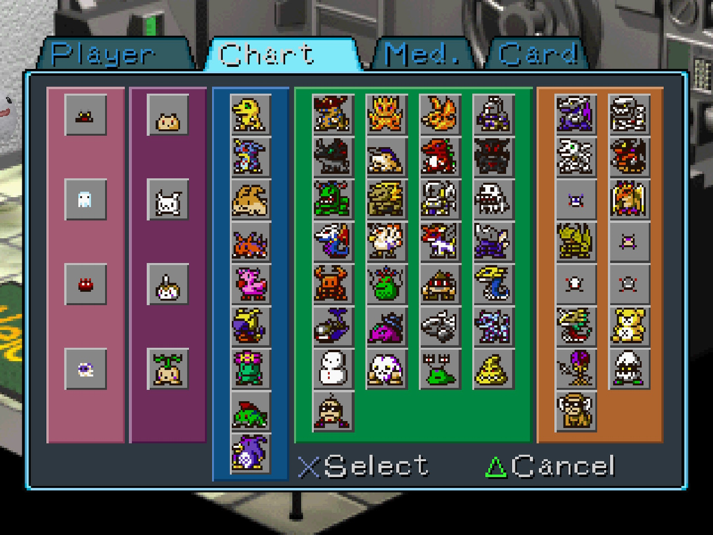
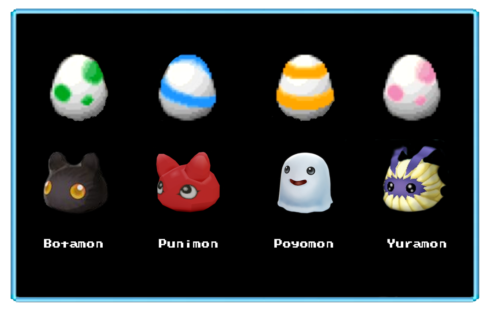
Your digimon will evolve after a certain amount of time depending on the current form of your digimon. Every digimon has a life spawn of 360h (15 days) (Check basics > lifespawn for more info) This is how much they take until the next evolution:
Baby 🡆 in training = 6h
In training 🡆 rookie = 24h
Rookie 🡆 champion = 72h
Champion 🡆 ultimate = 144h
Note 1: Any Rookie will be forced to evolve into Numemon after 96 hours or more.
Note 2: Any Champion will evolve into Vademon at exactly 360 hours.
Note 3: After evolution, care mistakes and battles will reset to 0
Your digimon will evolve into different digimon depending on certain requirements. These requirements are:
Note 1: You only need to fulfill 3 requirements to digievolve. For the bonus requirement (check 4 evolution tool) you only need to fulfill 1 of the conditions inside that box for it to work.
Note 2: After evolution the care mistakes and battles will be reset to 0.
Note 3: The moves dynamite kick and horizontal kick count as twice for the bonus requirement for evolution.
Note 4: With digitamamon in the restaurant, you can keep feeding your digimon while hungry forever, this is good for a high weight requirement. Only when digitamamon is serving at the restaurant.
You increase your stats by training your digimon or giving them an item (check training for more information). Your digimon gains weight every time he eats food, and loses weight when he poops, gets tired or sleeps (food also gives energy). For bonus we have discipline, happiness, techniques learned, battles, and other special characteristics. Care mistakes means you didn't take care of your digimon needs.
CARE MISTAKES
Skip feeding
Skip sleeping
Not pooping in a toilet.
EXCEPTION: If you sleep while your digimon is hungry or needs to poop you won't get a care mistake (next day the poop will be there, the virus bar will still increase)
Note 1: If the starvation timer drops to 0 during a training session or while resting at
Punimon, Centarumon or Kuwagamon, you will get an additional care mistake. This is good to get certain ultimates.
Here is this fantastic tool where you can introduce your digimon stats to see which digimon you will get and the requirements needed for evolving: Evolution tool
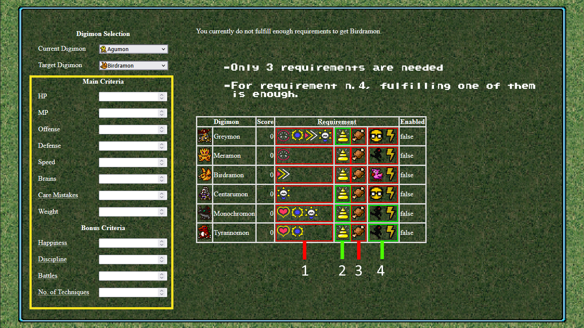
You introduce your current stats of your digimon on the yellow box, and it will highlight a digimon if you are eligible for evolving. You can hover over every requirement to see the specific value. These simbols mean: ≤ less or equal than (number), ≥ greater or equal than (number)
There are other means to evolve a digimon which are through items or special conditions. Check it out here: Special conditions // Items
Your digimon will gain stats upon evolving. If you evolve your digimon through an evolution item you won't gain any stats. If you get numemon into monzaemon's suit you will gain stats.
Some digimon have preferences for evolution (for example, if you have a biyomon you have more chances to evolve to birdramon. You can check this on the evolution tool, bonus requirement.
The easiest ultimate to get are:
1- Giromon - Bakemon can turn into giromon very easily since he has low stats requierment and requires a lot of care mistakes so it's the easiest ultimate to get
2- Monzaemon:If you have a numemon it can turn into monzaemon if you go to toy town and interact with the monzaemon costume that's located on the room to the left.
Since we only need 3 requirements to evolve, we are mainly going to ignore the STATS requirement and go for weight, care mistakes and bonus to get an ultimate digimon
You can improve the training via better gym and items that boost your training. You can gain stats by evolving, with items that boost your stats (chips, food..) tamer level and drimogemon's carrying dirt. Finishing a battle gives stats but it's very little.
Training can improve with:
- Training manual in your inventory = (+10%) (you can buy it from piximon randomly at the large store)
- Kuwagamon in town = (+20% MP, OFF, BRAINS)
- Kabuterimon in town = (+20% HP, DEF, SPEED)
-Train 10 times at green gym station with a fresh-in training digimon = (+20% stays permanent, it's unrelated to kabuterimon-kuwagamon) You don't need to do this on the MP station.
With food/items:
-Supercarrot = 20% boost off, brains, MP
-Hawk Raddish = 20% boost for def, speed, HP
-Digipine = 50% boosts on everything.
Note: Eating another food will overwrite the training food
There are items that boost your digimon's stats upon consumption: Stat chips, Dv chips, Stat fruits (+20) Deluxmushrm (all stats + 10) Black trout (all stats +1)
Restaurant:
Restaurant food gives you lots of energy and some stats. The menu depends on the digimon that's at the restaurant currently, and it varies from hours. Check the restaurant here: RESTAURANT
Carry dirt drimogemon:
You can help drimogemon carrying dirt out of drill's tunnel 10 times. Every time you do it, you gain 50 HP and 5 offense+ defense as well as 500 bits.
Tamer level
Tamer level decide how much of your stats get inherited for your next digimon. The current tamer level is the percentage of stats being carried over.
Tamer level increases if:
Beating the game, town flourishing or digimon master medal.
Raising your digimon to ultimate.
20% Chance when raising a digimon to champion
10% chance when winning a B-Rank Tournament
20% chance when winning a A-Rank Tournament
30% chance when winning a S-Rank Tournament
5% chance when your Digimon has 100% happiness when the year rolls over
Tamer level decreases if:
If your digimon loses all 3 of its lives.
10% chance when feeding DV Chips
30% chance when entering a “too low rank” tournament
1% chance when your Digimon poops on the ground
1% chance when skipping sleep
10% chance when your Digimon has negative happiness when the year rolls over
Every digimon can learn moves. The moves that the digimon can learn are based on the digimon type (fire-fight..). Once you learn a move, you have it forever, and once you get another digimon, you will be able to use it if the digimon is the specific type. There are 57 techniques you can learn.
Your digimon can learn moves in two different ways: By seeing the move while fighting an enemy digimon, or through training brains. Not because you see the move means you will learn it, it's based on chance. The moves you learn from brains are also a matter or chance. You learn the moves by brains in order, you can check the order in the moves tool tab: brain learning.
When you train brain at the gym, you have a chance to learn a move at 150, 250, 350, 450, 550, 600, 650, 700, 750, 800, 850, 900, 950 and if you can get exactly 999.
You can check every attack that a digimon can learn, which digimon you can learn it from, the chances and more in this tool: Moveset tool
Note 1: The moves dynamite kick and horizontal kick count as twice for the bonus requirement for evolution.
Note 2: if your digimon is main type mech you have to learn attack POWER CRANE from fighting other digimon otherwise you won’t learn anything from training brain at the gym (it’s a bug)
The best moves in the game are the following:
Numbers:
Spinning shot - megalo spark - thunder justice
Seawing:
Bug
Ice statue
Wind cutter
File city
Greymon
Level: Champion ~ 5000hp
Drops: Off. Chip.
I added greymon's recruitment in beetleland as a part of the gym upgrade.
Unlocks: The arena.
Airdramon
Level: Champion ~ 4000 hp
I added Airdramon's recruitment in 45PP+.
Unlocks: After you beat machinedramon opens the fortune telling in the arena (it's useless).
Native forest
Agumon
Level: Rookie
Unlocks: Item bank for storage of your inventory items.
Kunemon
Level: Rookie.
Drops: HP chip.
Unlocks: Opens up the path between file city and digimon bridge.
Palmon
Level: Rookie.
Drops: Brain chip.
Unlocks: Upgrade meat farm so you get giant meat.
Coelamon
Level: Champion.
You can travel to tropical jungle if you talk to coelamon
Unlocks: Shop or upgrades shop inventory.
Seadramon
Level: Champion
Can give you moves and items.
Unlocks: Ferries you between Beetle land and Dragon Eye Lake.
Etemon
Level: Ultimate ~ 5000hp
Drops: Brain chip.
Unlocks: Sells golden bananas at digimon bridge.
Tropical jungle
Betamon
Level: Rookie
Unlocks: Shop or upgrades shop's inventory.
Centauromon
Level: Champion.
Unlocks: The clinic where you can rest, heal or cure sickness.
Bakemon
Level: Champion.
Unlocks: Nothing, patrols the city.
Vegiemon
Level: Champion.
I added vegiemon's recruitment in +45pp random/moving encounters. You need day 15 to unlock vegiemon.
Unlocks: Upgrades the meat farm so you get sirloin. Sells supercarrots and hawk raddish.
Piximon
Level: Ultimate (VERY STRONG)
Drops: MP chip.
As a part of random encounters
Unlocks: You can find him randomly inside the large store. Sells the training manual for 50.000 bits.
Drill tunnel
Drimogemon
Level: Champion
Unlocks: Meramon's cave, path though drill tunnel to gear savanna and Treasure hunter shop north of meat farm.
Meramon
Level: Champion
Drops: Off. Chip.
Unlocks: Restaurant and clears the rocks that block the path thru mt. Panorama.
Mt. Panorama
Unimon
Level: Champion
I included recruitment under gear savannah's tab.
Unlocks: Shop or upgrades shop's inventory.
Mamemon
Level: Ultimate (VERY STRONG) 5000hp
Drops: Quick chip.
Learnable move: Full potential.
It's a random encounter.
Unlocks: Sells booster disks at the secret store.
Vademon
Level: Ultimate
I included recruitment under 45PP+'s tab.
Unlocks: New restaurant recipes.
Gear savannah
Elecmon
Level: Rookie.
Unlocks: Turns on the lights from File city.
Patamon
Level: Rookie.
Unlocks: Shop or upgrades shop inventory.
Biyomon
Level: Rookie.
Unlocks: Shop or upgrades shop inventory.
Sukamon
Level: Champion (adds 1 pp).
Unlocks: Nothing, no message saying he joins the city but he does.
Leomon
Level: Champion
I added his recruitment as part of 45PP+ tab.
Unlocks: Nothing, he stands inside birdra transport.
Misty trees
Gabumon
Level: Rookie (but very strong, can deal 1200hp at once)
Unlocks: Improves treasure hunter shop, increasing chances to get valuable items like evolution items or chips.
Kokatorimon
Level: Champion (VERY STRONG)
Drops: Def. chip.
Unlocks: A statue near the toilet.
Great canyon
Ogremon
Level: Champion
It's a moving recruitment.
Unlocks: Nothing, ''patrols'' the city.
Birdramon
Level: Champion
Unlocks: BIRDRA TRANSPORT.
Monochromon
Level: Champion
Unlocks: Shop or upgrade shop's inventory.
Shellmon
Level: Champion
Unlocks: Shellmon's bulleting board, contains information as well as hints and trigger certain recruitment.
Greylord's mansion
Myotismon
Level: Ultimate
Unlocks: Fights in the arena.
Skullgreymon
Level: Ultimate ~ 5700 hp
Drops: Off. Chip.
Unlocks: Fights in the arena.
Beetleland
Kabuterimon
Level: Champion
You need Greymon recruited for recruiting kabuterimon.
Unlocks: Improves HP, defense and speed training station at green gym.
Kuwagamon
Level: Champion
Unlocks: Improves MP, offense and brain training station at green gym.
Freezeland
Frigimon
Level: Champion
Unlocks: New restaurant recipes.
Penguinmon
Unlocks: Curling at the arena.
Level: Rookie.
Mojyamon
Level: Champion.
Unlocks: Secret shop - Sells rest pillow (more sleep regen) and health shoes (HP+MP regen while walking).
Whamon
Level: champion
Unlocks: Factorial town and secret beach cave.
Garurumon
Level: Champion (VERY STRONG)
Unlocks: New restaurant recipes.
Ice sanctuary
Angemon
Level: champion
Unlocks: Hints about digimon that you haven't recruited yet, find him inside jijimon's house.
Ancient dino region
Tyranommon
Level: Champion
Drops: HP Chip. Meteormon (as part of the recruitment) drops HP chip.
Unlocks: Secret shop, sells enemy bell and enemy repel.
MetalMamemon
Level: Ultimate (VERY STRONG)
Drops: Def. chip.
It's a random encounter.
Unlocks: Alternative curling opponent.
TOY TOWN
Monzaemon
Level: Ultimate ~ 5000 hp.
Drops: x2 HP chip.
Unlocks: Nothing, you can find monzaemon's costume in the back of jijimon's house.
Moving recruitments
Nanimon
Level: Ultimate
Drops: 1st time: Keychain (hold up to 20 items), 5th time: Another key chain (hold up another 20 items)
Unlocks: Nothing, you can see him at the item bank but you can't interact with him.
Mt. Infinity
Devimon
Level: Champion - 6000 hp.
Drops: Quick chip.
Unlocks: Secret shop, sells DV chips.
Megadramon
Level: Ultimate ~ 7000 hp
Drops: Off. chip.
Unlocks: unknown.
MetalGreymon
Level: Ultimate - 9000 hp
Drops: Def. chip.
Unlocks: Comes up with nicknames for your digimon at the arena.
Digitamamon
Level: Ultimate ~ 9500hp
Drops: Quick chip.
Unlocks: New restaurant recipes. The food from digitamamon doesn't fill your hunger so you can keep eating forever as long as you have money.
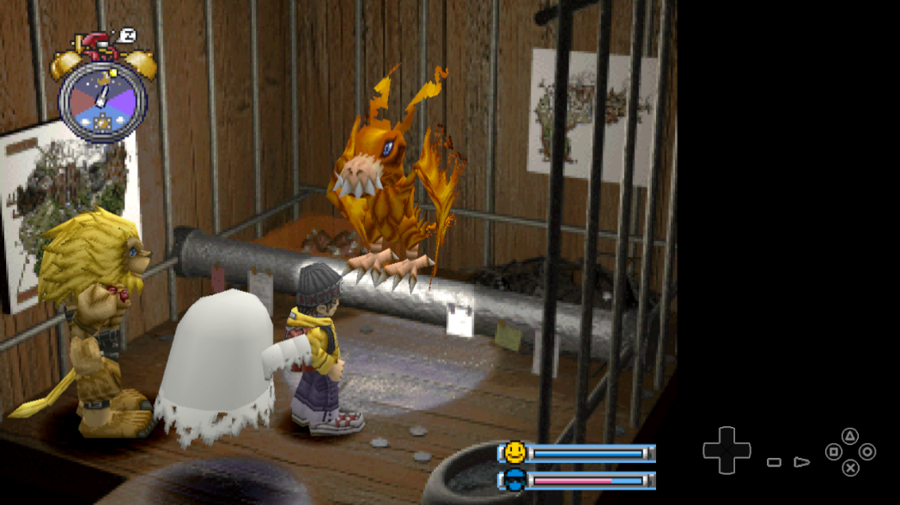
Screen
Area
Price
Unlocked by
GCAN03
Great canyon
1000
Birdramon recruited
GIAS01
Gear Savanna
1000
Discovery Recycle Shop
KODA00
Ancient Dino Region
1500
Speed Zone(see textbox)
FRZL6
Freezeland
2000
Enter crossection map (north of toilet)
MIST05
Misty Trees
2500
Talked to cherrymon
BETL01
Beetle Land
2500
Recruit seadramon
You can unlock birdra transport by beating birdramon on a fight. He's at the rooftop of the elevator in great canyon. Once birdramon joins the city, it will unlock destinations once you see them. You need to hold certain direction in some destinations to not run into an enemy.
Great canyon
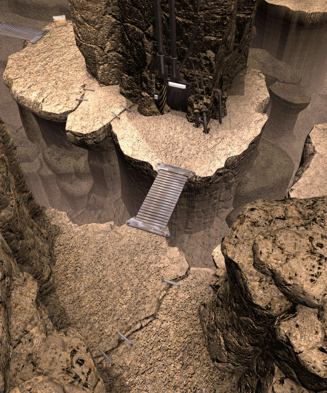
Gear Savanna
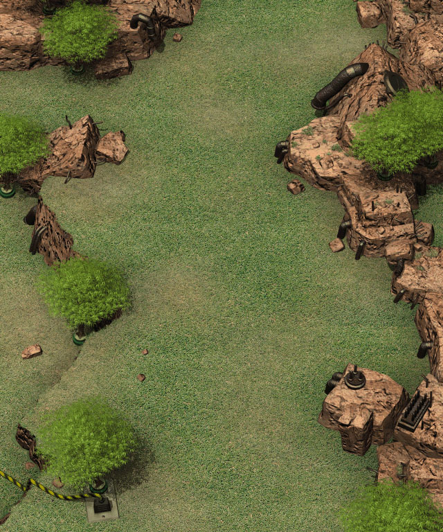
Beetle land
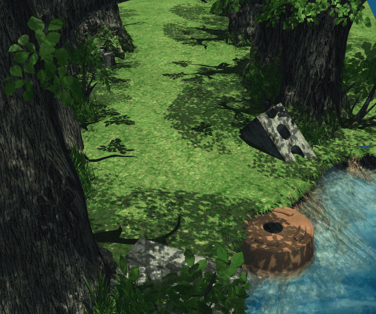
Misty trees
Freezeland
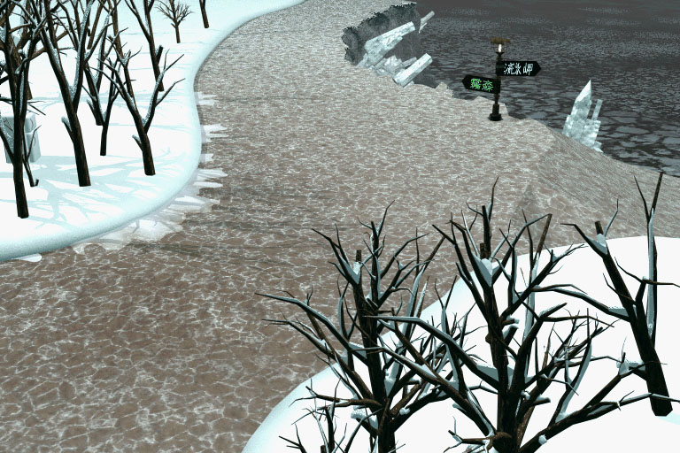
Ancient dino region
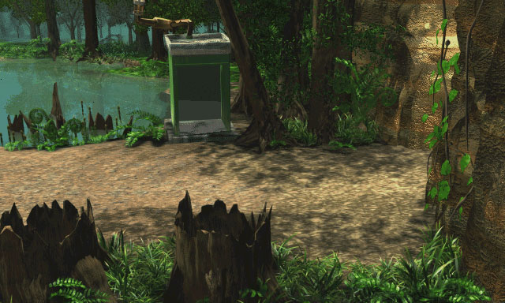
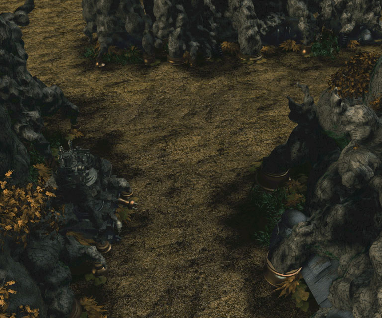
There's two locations where you will have to hold a button to not run into a digimon after teleporting. These are:
Freezeland
Hold left in the black screen to be safe from encounters
Ancient Dino Region
Hold up in the black screen to be safe from encounters
One of the Mojamon at freezeland trades items and we will take some good profit from this. Buy an auto pilot, and as many med. recoveries you can until you have 2000 bits left. Go to birdra transport, teleport to freezeland IMPORTANT!: You must hold left the whole time so you don't run into an enemy. Go south and trade all the med.recoveries for s.def.disk (sells for 2000 bits). You get a profit of 1500 for 1. Use the auto pilot home and repeat this over and over as many times you want.
Note: There's a glitch where mojamon gets close and you can move and you will softlock, so always carry an auto pilot with you.
You can recruit mojamon if you trade all the items with the three mojamons. Once you trade everything, the last mojamon will join the city and we won't be able to trade anymore so have this in mind.
I made this route with the purpose of beating the game casually and very easy. We can do two things: Evolve our agumon into bakemon by dying, bakemon can enter grey lord's mansion and learn many good attacks there and attacks in area that will benefit us in fights with more than one enemy. Or we can turn agumon into numemon to get monzaemon for free (ultimate digimon).
There's a place called toy town where if you bring a numemon, it will enter the plushie's zip and turn into monzaemon, so our goal is to turn our agumon into numemon.
I made the monzaemon route to get all the resources necessary to train our digimons into ultimate the fastest way possible. Bakemon's route is mostly the same as monzaemon but differs a bit here and there.
The route is optimised so you recruit as many digimon possible to get access to all resources fast, cheesing all the random digimons so you don't have to fight if you don't want. Hitting all the travel points in the way so we can travel right away once we recruit birdramon.
We can pick two options, either evolve agumon into a numemon so you can get a monzaemon (ultimate digimon) for free, or evolve agumon into bakemon by dying (Check route for more info). If you want to go for numemon, we are going to do more than 5 care mistakes and weight under 15kg so don't feed Agumon except when you train so he doesn't get tired, and don't use any chip on agumon. We also need to win 5 fights, all of these so Agumon doesn't digievolve into Tyrannomon. None of these matters if you want to evolve to bakemon, you can use chips on bakemon.
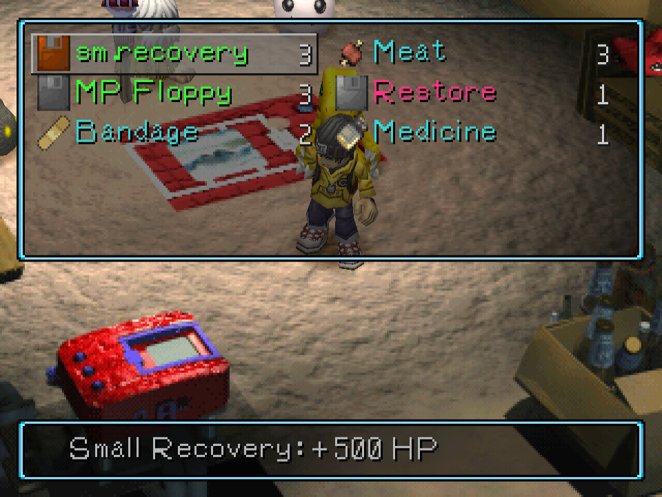
Praise your digimon until the bar is fully blue. Go back inside jijimon's house and talk to tokomon. He will give you these items. You can rest in the future if you talk to punimon. It doesn't heal you fully and it doesn't remove much tiredness. Leave the house and go west, you will arrive to the gym. Train speed 4 times and exit the gym to the bottom.
Agumon
You will run into agumon if you exit the gym from the bottom. He will run into you and you will have to defeat him. He will join the city afterwards. He opens a bank next to jijimon's house where you can stash your items. Rest once at punimon.
On the way to palmon you could take a small detour to pick a medium MP.
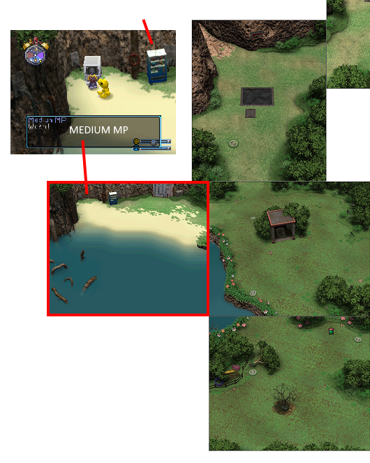
Palmon
Drops brain chip.
To recruit palmon, talk to her three times and you will enter a fight. Beat her and she will join the city. She upgrades the meat farm, giving you 3 pieces of giant meat per day. Sometimes she can randomly give you 5 pieces instead.
Kunemon
Drops MP chip
Go north from palmon and you will find kunemon on a bush. Talk to him and he will say he's hungry. Give him any food item and he will fight you. He will join the city once you beat him. Opens the path between file city and the jungle bridge and gives hints of food items.
Coelamon
Go south to coela beach. After getting close to the sea, coelamon will interact and let you go to tropical jungle.
Go to the left screen to see the bridge but don't get too close to the palmon since you will get stuck for a little bit after triggering the bridge. Now the bridge is repaired. Go east through the shortcut that kunemon made and stash all of your items at agumon's bank, keep 1 small recovery in your inventory.
With the bridge repaired, go back to coela beach still at dawn and interact with coelamon again and he will join the city. He will work at the shop in file city.
If agumon gets sleepy don't sleep yet. Go back to the bridge to tropical jungle all the way to overdell. Right when you enter overdell there will be a digimon walking towards you so dodge him.
Bakemon
Enter overdell cemetery between the digimon. Talk to bakemon and answer YES, YES, NO. Bakemon will join the city.
To exit the cemetery without running into the enemies you have to hold left the whole time on the black screen that says ''overdell'' and you will always dodge them.
Go east and get close to the invisible bridge until the text box shows up. Leave south to tropical jungle.
Betamon
When you are on the ''mangrove region'' black screen, hold up to avoid the enemy digimon. Talk to betamon and he will join the city. He opens the store in file city.
Pick the med recovery and head northwest to amida forest. Before entering amida forest, if your digimon is not full hp, use the small recovery.
Centauromon
Most people seem to struggle in this screen but it's pretty simple. The name ''amida forest'' comes from a japanese lottery game called ''amidakuji'''. Once you pick a starting point you have to follow the line and take every horizontal turn you get to on the way down until the end.
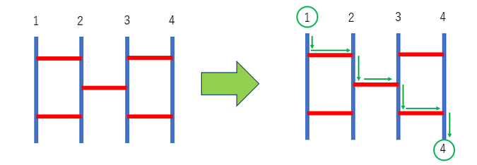
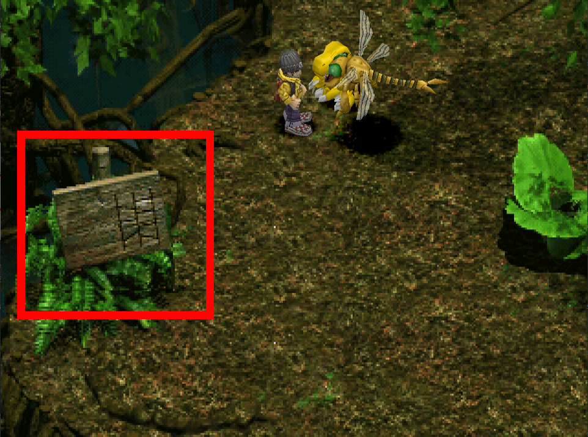
You can even see a hint of the amidakuji game right before amida forest on that bulletin board.
Centauromon can shoot if you get the incorrect path or if the exit is not in front of you so always heal agumon before starting. (I recorded it in day time so the path is more clear, but by the time you get there it should be night so don't put agumon to sleep yet)
Start moving to the left side and from there take every turn to get covered behind the wall. Don't pick any items unless they are on the way. Once you get to the third row of bushes, tap the button until you can see where the red circle is at and walk towards it. If so happens that the circle is on the right side you will have to take a hit. Once you reach the circle, Centauromon will join the city. He opens a clinic where you can rest to heal and remove tiredness and sickness.
EVOLUTION:
If you want to evolve to numemon, turn around and leave inmediately from dino region. Go back home.
If you want to evolve to bakemon, you want to fight tyrannomon and do the following:
We are going to take an intentional death fighting tyrannomon and get teleported to file city for free. There's a 10% chance to get bakemon if your digimon dies, so we are going to put agumon to sleep right there to save the game, fight tyranommon and reload the game if your digimon doesn't evolve into bakemon after the conversation with jijimon is over. It will happen eventually so keep reseting the console and loading from memory card (I don't know if it works reloading savestate)
Heal at centauromon's clinic at file city (talking to centauromon will make unimon appear later). Buy 5 small recoveries. Talk to yuramon about the invisible bridge in great canyon.
Time to train. Make sure to feed your digimon if he needs to have energy for training. We are going to train different stats depending on the digimon we have:
IF AGUMON:
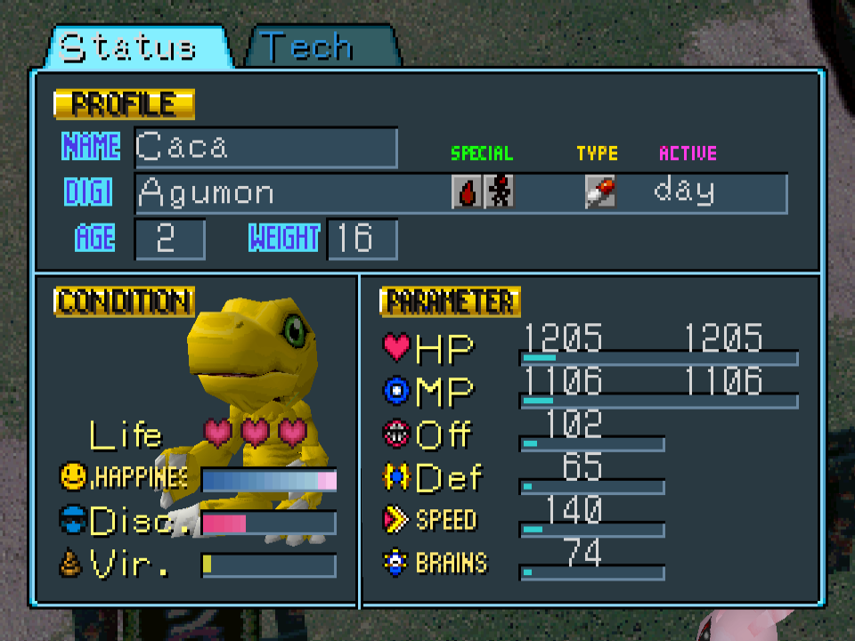
Train some HP, SPEED and ATTACK until you have these parameters.
IF BAKEMON:
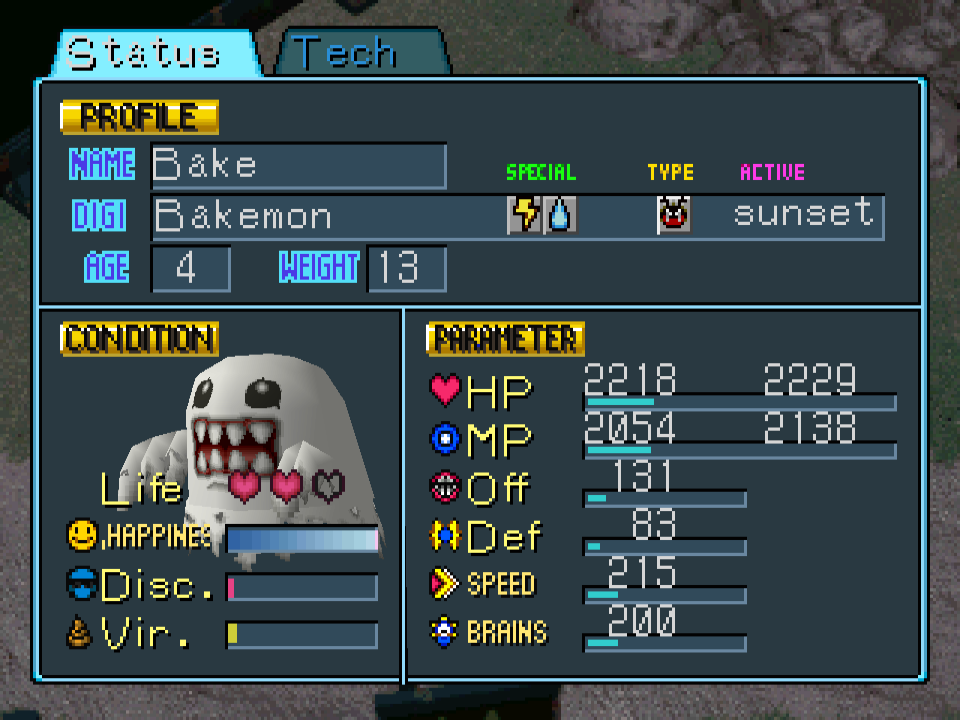
Train HP and MP until 2000, SPEED and BRAINS until 200. Later usechips on bakemon to improve his stats even more.
We are going to drill tunnel now. Note: If agumon, fight 2 enemies on the way there (so we don't evolve into tyrannomon later). If you are not full HP afterwards, go back and heal.
Beat drimogemon so he starts drilling the tunnel.
Cross the bridge between the enemies and talk to that drimogemon so you can help carrying dirt.
After talking to drimogemon, press X close to the dirt to pick it up. Take it out and go back, talk to drimogemon again, and pick the dirt and repeat the process over and over (10 times). Each time you do it, gives 500 bits, 50hp, 50 def and 50 offense. You might need to go back to the clinic and rest in between.
Once it's done, if you leave the screen and enter again, you will see that drimogemon found a rock blocking the path. You can only move the rock with a champion or higher.
Go back to file city, rest at centauromon until full HP and pick items from the bank and buy at the store until your inventory looks something like this:
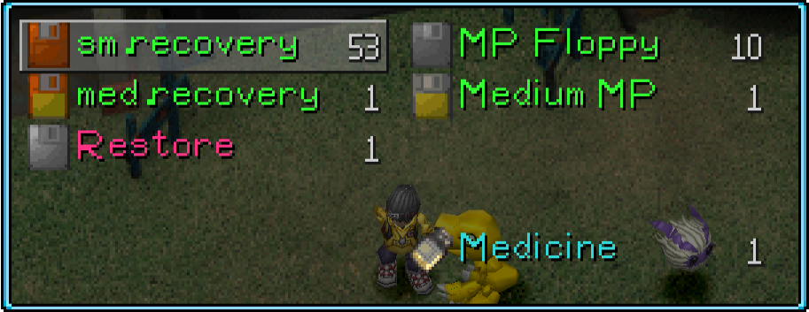
We are going to great canyon now. Don't forget to talk to yuramon about the invisible bridge before leaving. When we are at great canyon, check the invisible bridge so we can walk on it.
Monochromon
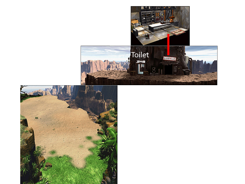
If you want to evolve agumon into numemon, he will evolve at the age of 6 so to kill some time until the evolution you could go to monochromon's store and try to recruit him (it's hard). Learn more about the store Here, instert link. Don't forget to check the screen with the three goburimons so you can talk about the bandits with yuramon later.
Once you evolve to numemon, go back to file city. Talk to yuramon about the bandits.
IF BAKEMON:
We are going to get some abilities for bakemon now. You can fight the two tsukaimon at the entrance of cementery or at cementery. Fight them both for double chances of learning spinning shot. You will only have a chance of learning the move if the enemy uses the move.
Enter grey lord's mansion and enter the fridge room. Save before fighting and fight the soulmons. The goal is to learn Thunder justice, but you can also learn electric cloud and megalo spark. Go back to file city afterwards and rest at clinic.
Meramon
Drops: off. chip
Go back to drill tunnel and push the rock. You will find meramon at the end of the lava tunnel. Beat him and he will join the city. He opens the restaurant and the path to mt. panorama.
ITEMS: Medicine, off. chip, protection, s.def
Drimogemon
Go back south of lava cave a couple of days later and talk to drimogemon to recruit him.
We are going to head off to gear savannah (goal: get monzaemon if numemon) leave the off. chip at the bank (or use the chip if bakemon) Sell the protection and s.def.disk and ONE medicine (you must keep one medicine to recruit unimon). Buy as much as you can. Your inventory should at least look like this:
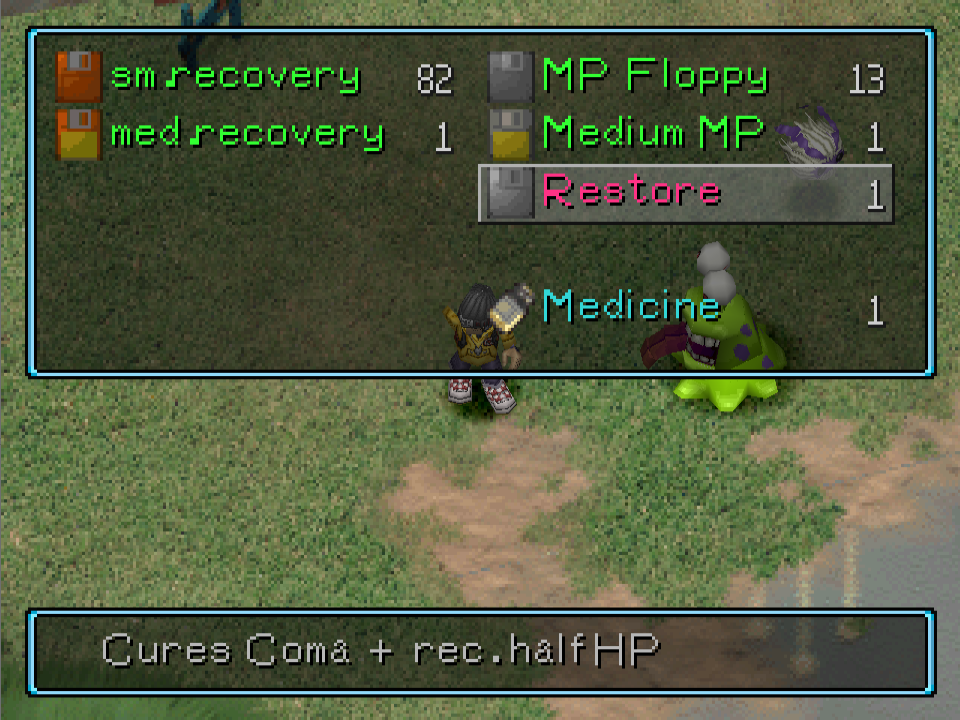
(The restore might not be in your inventory if you used it while fighting Meramon or else).
Unimon
Head off from native forest to mt. panorama. Be careful (0:13) make a short stop or the digimons will run into you, dodge them that way. You will find Unimon if you talked to centauromon at least once. Give him the medicine and he will join the city.
You can find medium mp, med. recovery and various inside the TVs. Walk on the circle drawn on the floor until you get the text box. This is just so we can recruit vademon later on.
Head to gear savanah avoiding all the digimons in the way. You will find the recycling store. If you talk to the left vendor you will get a card of yourself!
Elecmon
Exit the store and wait for the drimogemon to spin a couple times to avoid him. You need your digimon completely healed. You will have to talk to elecmon three times and you will receive almost 300 damage per turn. After talking to him three times he will join the city. He turns the lights on, just aesthetic.
Patamon
Head west to find patamon. He wants to fight 3 times. Each time you win he asks you if you want to do it again, press yes. After winning 3 times he will join the city. He works at the store.
Biyomon
Head south and you will find biyomon. Talk to her and she will run away. Chase her down and when she runs away from you, move in circles around that spot to find the trigger to wait. Press wait and your digimon will come back. If your digimon didn't bring biyomon just repeat the same thing over and over until your digimon brings her.
Head to the trash mountain and cheese all the digimon in the way.
Sukamon
Enter the trash mountain and cheese your way in skipping the digimons that way. You find the rod in the next screen to the right. Talk to the upper sukamon and he will join the city. You can find him sometimes close to the toilet at file city.
Exit the trash mountain cheesing your way out past all the digimon. If you do exactly like in the video you will always dodge them.
If your digimon gets sleepy don't sleep yet. We need to get to gecko swamp at night to find the tadpole on the second screen. Talk to the tadpole and answer ''that makes me angry''. You will get into a fight. Once you defeat him, the frogs will show up and carry you to Shogun Gekomon. He will remove the mist spell so you can navigate through misty trees.
Shogun Gekomon trades digimon cards for items. Most of these items are good for upgrading your digimon stats to have an easier time getting an ultimate digimon.
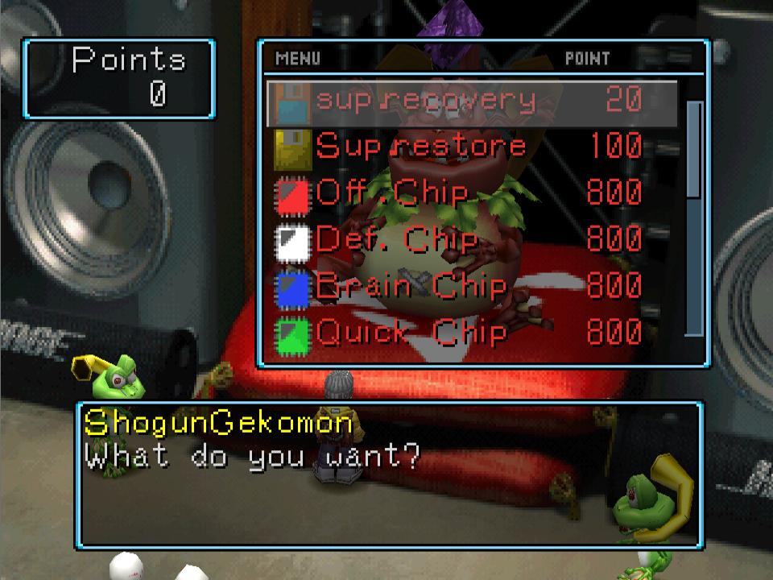
You can get digimon cards at the recycling store, or at file city's shop once you get the full size shop. He sells the amazing rod, among other items.
To get the full size shop you need to recruit enough digimon that works at the store. When we go back home later our store will be already upgraded to the full size shop.
Gabumon
Exit the area and head off to misty trees. Be careful (0:15) scroll the screen slowly a bit to the left until you see the digimon coming towards you and dodge it quickly. You will find gabumon hidden behind the rocks.
Optional fight. Gabumon can boost himself and deal up to 1200 dmg so if you don't have restore maybe think about fighting gabumon later instead of dying so you don't have to come all the way back. Keep your digimon healthy at all times during the fight. If you see him charge the ultimate attack, HEAL!
If you win, gabumon will join the city. He will improve the treasure hunter shop that drimogemon opens.
Now we will go and find Cherrymon at the end of misty trees. You can cheese many digimon on this path. (0:13) To avoid the brown ogremon just hog the left wall and you won't run into him. (0:20) Wait until that ogremon turns around, now's your chance!
Talk to Cherrymon and he will remove the fog. He will open the path to Toy town. If numemon: Get inside the left building and you will find a monzaemon plushie. Interact with it and your numemon will turn into monzaemon, an ultimate digimon.
Kokatorimon
Drops: Def. chip.
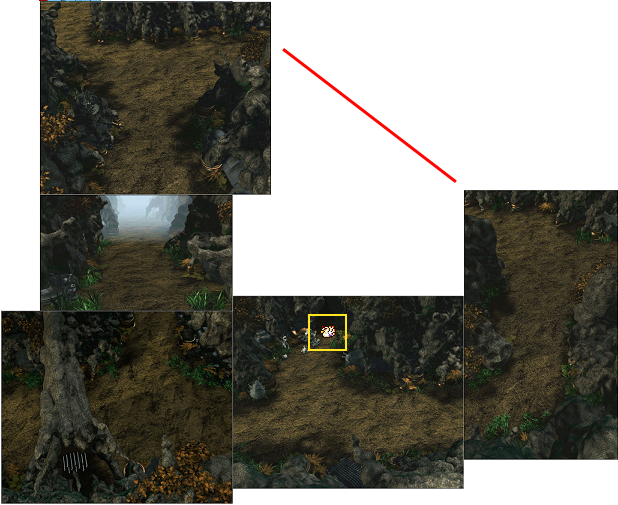
You can find kokatorimon there early in the morning. Be prepared, he is very strong so I recommend coming here later when you have an ultimate digimon.
Leave toy town and head east. We are going to go to great canyon through freezeland, to recruit birdramon and unlock freezeland as travel point for birdra transport at the same time. You can cheese many enemies on the way.
Birdramon
Once you get to great canyon, press the elevator UP. Heal before you stand on the nest. Birdramon will appear and wants to put on a fight! When you beat birdramon you will get teleported to file city for free!
Talk to yuramon outside jijimon's house about the great bandits at great canyon. Use birdra transport (1000 bits).
Ogremon
To recruit ogremon you will have to fight him 4 times in different locations in this order: great canyon intersection - ogremon fortress - secret beach cave (freezeland) - drill tunnel
(Ogremon 1) Once you get to the goburimons screen, they will be gone. If you try to cross you will get raided by ogremon and two agumons. Using spinning shot for damage in area is enough. Optionally megalo spark / thunder justice. Once you beat them, they will move to the next area: ogremon's fortress.
The elevator down is broken. If you go back and step two times on that rock you will fall down to the bottom area.
(Ogremon 2):Find the elevator and press up to unlock the elevator. Go back down and enter ogremon's fortress by talking to agumon.
Fun facts: in most of the european versions, you can't interact with agumon so they sold copies of an unbeatable game.
Ignore all the items and dodge the enemies from both screens. You will reach a screen with three agumons. Talk to them and fight them so they get away from the door.
Cross the screen. You can dodge those two agumons by walking on the left side. Get close to ogremon and you will start a fight against him and both agumons.
Ogremon drops HP CHIP
Shellmon
GOBURIMON SKIP:
Press the elevator and go past the bridge to the left. You will arrive at a screen with a goburimon blocking the bridge. Press pause to align the character on the mark of the bridge that looks like a rail and hold diagonal up. Once you touch the wall you will get moved and locked in place. Pause again and hold left the entire time until you collide with the wall of the bridge. Then still holding left, mash up and you will skip the goburimon. For more info youtube video: Goburimon skip
When you are about to cross the bridge a text window will pop up. Shellmon will talk about a strange mechanism.
You will have to go back and press the elevator down, make it all the way back from ogremon's fortress through the entrance door. Sadly you can't avoid fighting goburimon from this angle. There won't be enemies in the fortress anymore, so it's time to pick up all the items. That door will now be open. You can find these items in the fortress:
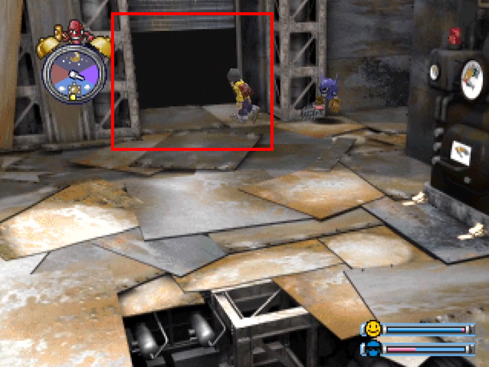
Portable potty
Def. Chip (x2)
Off. Chip
S. Off. Disk
Sirloin
Auto pilot
Double flop
Now exit the fortress from the entrance door:
Get to the elevator and press ''hit up''. Close the bridge to the left to freezeland and exit freezeland from the other bridge. You will find shelmon, talk to him and he will join the city. He unlocks the bulleting board on file city, which contains hints and rumours. The item by his side is DEF. CHIP.
Monochromon
Monochromon's store is located by the invisible bridge in great canyon. To recruit monochromon, you will work in his store and do a profit of at least 3000 bits. Working at the store takes 8 in game hours.
You can raise, lower and keep the normal price. There will be four digimon that can come to the store, each with their own personality. If a digimon goes away and doesn't want the item because it's too expensive, it will penalise you and digimon will stop coming which affects the sales drastically, so it's always good to do offers on the most troublesome digimon instead of risking it and have the posibility to leave.
You can ignore the face icon over their heads.
To raise or lower the price, you have to press the button and it will say a random amount. To change the amount, you have to press ''rethink this'' until it says the amount you want.
Items:
- Meat: Don't bother raising the price.
- Portable potty: good profit
- Medicine: most expensive item.
Goburimon
He's the dumbest so always raise the price to the max, and if he doesn't take that price, lower it one step. Try to get the best price for medicine.
Gotsumon
You can get a good deal with gotsumon but he is a bit stubborn. Raise price one step before the max. price, and if he doesn't take that deal, lower it once step until he is satisfied. You might need to lower it more than once.
Muchomon
You need to lower the price but he is a bit more flexible so you can lower the price one step.
Weedmon
The most troublesome and stubborn customer. You need to lower the price at least two steps from the normal price. It's better to lower it as much as we can so he doesn't leave the store.
Myotismon
To enter greylords mansion you need a digimon type virus.
Enter to the room of the toilet past the way to the fridge until the dining room and pick the key that's inside the chimney.
Exit to the lobby and enter the toilet room again but go to the door to the right this time. Get upstairs and walk over the metal fence until you fall down. Interact with the coffin and you will find myotismon on the floor. Talk to him and he will say he's hungry and will hand you the key to the fridge.
Go back and open the fridge. You will get a message. Exit the mansion and you will find a piece of meat right there.
Carry the piece of meat back where Myotismon was. You will see a funny dinner time cutscene.
When you are 35pp or above, read shelmon's billboard in file city number 6, about Myotismon.
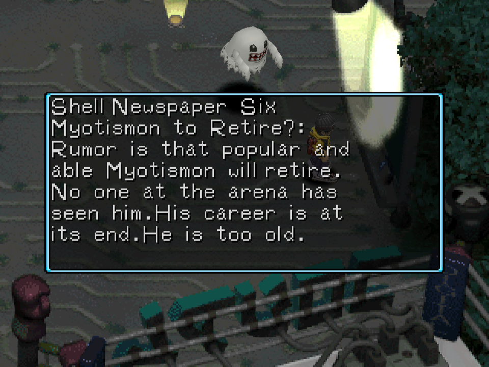
Go back to the mansion and check the room where you first found Myotismon and the dining room. You won't find him there. Attempt to leave the mansion and Devimon will appear.
Skull greymon
Drops off.chip
After talking to devimon get to the right bottom door, pick the elevator and go to the left door. An ultimate digimon is blocking the path so you will have to fight him. Once you beat him, you will find Skull greymon at the end of the corridor. Fight him and he will join the city once you beat him. He fights in the arena.
Once you beat skullgreymon, go back one screen and you can find Myotismon laying on the floor on the right corner of the corridor. Talk to him a couple of times and he will join the city. He fights in the arena.
Greymon
Drops off. Chip
Once you have 15PP or more, Greymon will challenge to a fight once you exit jijimon's house. BE CAREFUL! He's really strong (5000hp) so be prepared with healing and a strong digimon. Always carry a portable potty with you to exit jijimon's house to avoid the encounter if you are not ready.
Seadramon
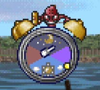
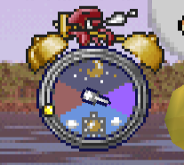
You can fish seadramon at 8am or 5pm with any rod.
Any kind of meat works.Once it hooks, wait around 3 seconds to press X. Once he's hooked time will stop and to start fishing you have to press X again. Tap the x button once the meter on the left goes blue. It takes about 2 minutes until seadramon gets tired so you can pull faster.
He can transport you to beetle land, teach techniques and give you an item. CAREFUL! Once he carries you to beetle land you won't be able to get the item or learn the techniques, so do that first (you could get the moves/item by other means as well).
Let's be friends! : Transport to beetle land and gives the flute to call seadramon.
Teach me a technique: You can fish, ask for a technique, and fish again until you have all of them. You can exit the screen and enter again right away to fish him again. You can learn:
Aqua magic
Winter blast
Giga freeze
I want an item: You will receive water bottle, an item to evolve your digimon into seadramon.
Kabuterimon
You need greymon recruited for recruiting kabuterimon. Talk to the one on the left and press the second option.
Kuwagamon
You can recruit kuwagamon at any time. Talk to the kuwagamon by the machines and pick the second option.
Whamon
(Ogremon 3) Cross all the way in freezeland to find whamon waiting inside the water (yuramon talks about whamon but it's not necessary to talk to him about it to find him). If you talk to him he will carry you to the secret beach cave.
Ogremon brings waruseadramon with him this time and you will have to fight both of them and a gabumon. Use spining shot, thunder justice and megalo spark. He won't join the city yet! Whamon will give you a ride to file city (In my case he didn't give me a ride, I still don't know why). Whamon joins the city!
(Ogremon 4) You will find ogremon at drill tunnel, fight him and he will finally join the city. He patrols the town. Drops HP chip.
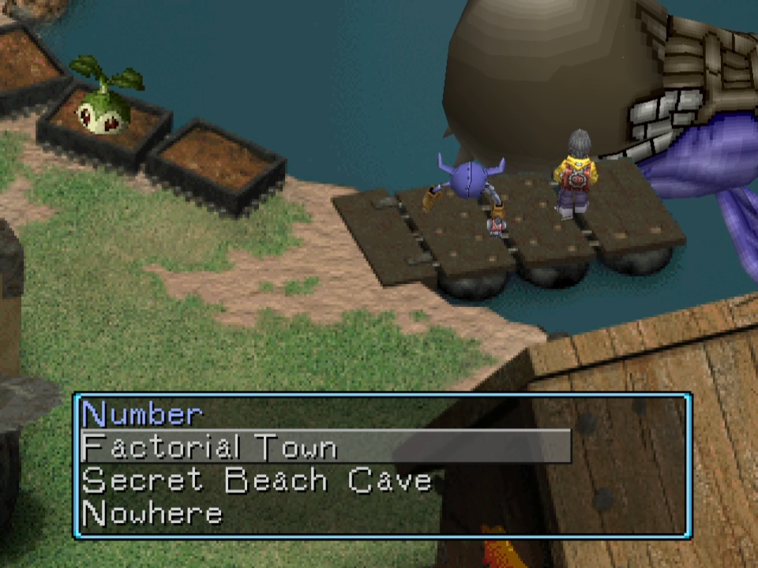
You can find whamon at the water place between birdra transport and tanemon-palmon's meat farm. He can carry you to factorial town and secret beach.
Go back to the secret beach cave to find mysty egg, an item that can turn any digimon into digitamamon (It doesn't work on ultimates)
Garurumon
Drops 2 HP chip.
DANGER! very strong!!. Fight him and win the fight. He will challenge you again for the next day.
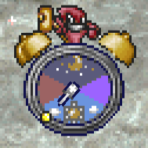
At 4pm the next day. If you miss that time you can still fight him but he will have more HP. The earliest you fight him the least HP he will start with (2000hp). The second fight has to be one without items or commands.
Frigimon
Get any fresh/in-training digimon, or monochromon/birdramon/meramon/kuwagamon/kabuterimon/greymon/tyranomon. Make them sick giving them moldy meat (you can find it at the vending machine in dino region, it will say ''steak'). Then walk around certain points to trigger the event, your digimon will faint and frigimon will rescue him. Once you talk to frigimon, come back another time with a digimon that's not any of the list above and he will join the city. He helps at the restaurant.
Mojyamon
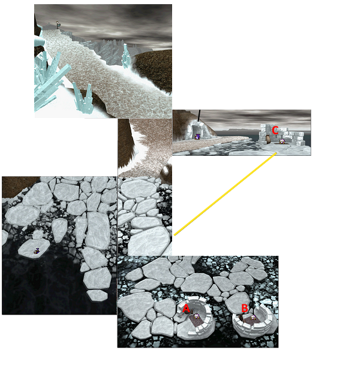
There are three mojyamon to be found. Each mojyamon offers you to trade 3 types of items. After you trade every item, the last mojyamon you traded with will join the city. BE CAREFUL: We will use mojyamon A to do a trick for infinite money so make sure you don't trade last with that mojyamon. I recommend trading last with mojyamon B. (For more info about the money trick check the guide above)
Items you need to trade - Items you get:
MOJYAMON A:
1. Omnipotent - S.off disk
2. Med. recovery - S. def. disk
3. Digianchovy - S. speed. disk
MOJYAMON B
1. Giant meat - Auto pilot
2. Black trout - Restore
3. Hispeed disk - Medicine
MOJYAMON C
1. Digimushroom - Med. recovery
2. Supercarrot - Omnipotent
3. Happymushroom - Hair grower
Once mojyamon joins the city he will unlock the secret shop. He sells rest pillow (more sleep regen) and health shoes (HP+MP regen while walking)
Penguinmon
Go southeast to find penguinmon. He will challenge you to a curling match. The first match is for free, but if you lose, you will have to feed penguinmon a fish to try again, so save beforehand.
The stones you get are RNG. You want the stone that has spikes so you could reload if you don't have it. The spikes stone gets locked in place so throw it at that speed towards the left ring, which gives more points, so then that ring is unnaccesible for penguinmon. Then you want to use small stones to kick his stones out of the ring in the middle, and finally use the biggest stones to get your position inside the middle ring.
The ice sanctuary is located to the west. To enter you need a vaccine type digimon, but you can enter the sanctuary with any kind of digimon with a trick.
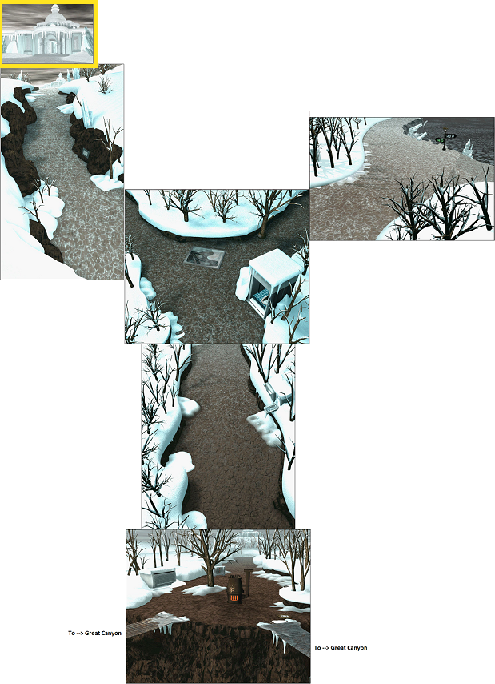
Walk diagonally until you hit the wall. Then hold up and align the character's hat with the end of the lighter wall. Pause and hold diagonal and you will enter. You can reposition tapping back and then forward
Angemon
Get close to the statue until the text box appears. Move in circles a bit until your digimon moves the ice block. There's an invisible wall to the right. Pick the teleporter in front of you. You can cheese the enemies that way. On the next screen, pick the teleporter that's up right. You will have to fight three digimon (luckily one runs away).
Once you beat them, pick the blue light sphere and exit the room. Pick the teleporter that's up left. It will teleport you to the ice block statue entrance. Enter the next screen and come back so angemon appears and joins the city! He will give you hints.
ITEMS YOU CAN FIND:
Medicine - Omni disk - Omni potent - Restore - Large recovery - Sup. recovery - Large MP
Tyranommon
Drops HP chip
Cross amida forest and you will encounter tyranommon. Fight him and he will go away.
He talks about a meteorite that you should get rid of. You can enter now ancient speedy region. Time goes faster in there so try to be quick. There's a secret path to the left when you arrive to the giant dinosayr skeleton. You will find a digimon, press ''crack it and check'' to fight him, defeat him and he will run away.
Meteormon drops HP Chip
Go back where you came from and talk to tyranommon. He will join the city and will help at the restaurant. On the way back you can get moldy meat from that vending machine. It's called 'steak'. We will use it later to recruit frigimon.
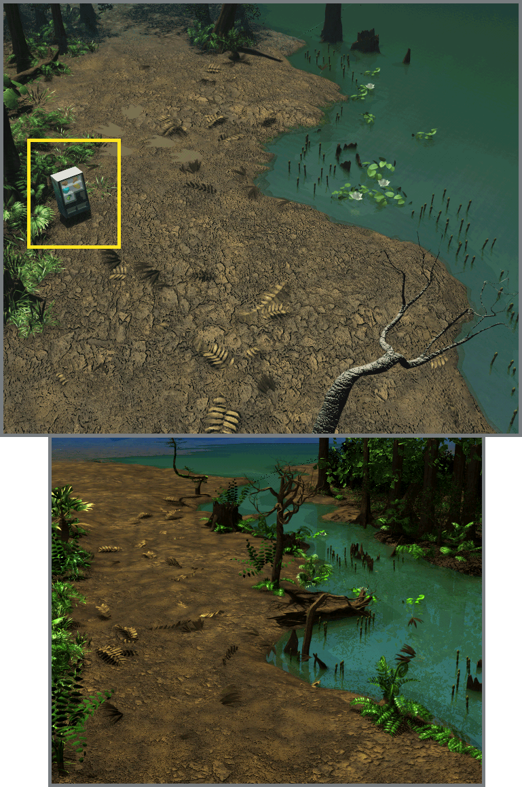
Andromon
To recruit andromon you have to beat giromon so the sewers are back to normal so you can recruit numemon.
Talk to whamon so you can enter factory town. There will be two digimons stopping you from entering.
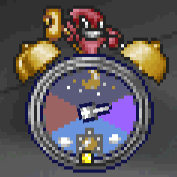
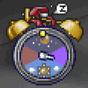
The digimons will be gone at 12am and 12pm. Once you make it inside the building they will be gone forever.
You can cheese the digimon if you walk close to the left platform. You can find HP chip and MP chip. Cheese the numemon by walking on the left edge. Enter the room and you will have to fight giromon.
After beating giromon, you can go to the room on top. Cheese the digimon by walking on the left edge both in and out. Items: Brain chip, auto pilot, def. chip. Exit and talk to andromon to stop the gas at the sewers.
Numemon
Go back to the sewers after andromon stops the gas machine and fight numemon. He will join the city afterwards. Drops HP chip. He unlocks the secret shop and sells enemy bell and enemy repel.
Now go back and talk to andromon and he will say that he needs some time to repair. Once you have visited the large shop, the arena, the hospital and the restaurant in file city go back and talk to andromon a couple of times and he will join the city. He stands outside birdra transport.
Giromon
After talking to andromon (you don't need to recruit andromon) go back to where giromon was and talk to him. He will join the city, unlocks the jukebox in the restaurant.
Fun fact: in NTSC versions the jukebox is bugged and causes your game to crash!
MetalMamemon
Random encounter (Ultimate, very strong!!) - Drops def chip
Enter factorial town from the pier in the back of the corner over and over and eventually metalmamemon will stand there. Defeat him and he will join the city. Becomes an alternative curling opponent.
I recommend going to toy town after getting all the attacks from bakemon and finish everything else first with an ultimate digimon, once your digimon dies, turn it into numemon and do toy town.
Monzaemon
Drops 2 hp chip
After you get to toy town from cherrymon as we saw, get your numemon into monzaemon's suit. Don't forget to put megalo spark and thunder justice as attacks. Exit and enter the building to the right and talk to tinmon, you can only talk to him if you have monzaemon as your digimon.
After talking to tinmon with monzaemon as your digimon, he will unlock the door for the toy mansion for ever. Only one of the doors is the correct one and it's RNG (until you beat warumonzaemon, then all doors will be the correct ones). If you pick the incorrect one, you will receive some damage. You can't avoid the digimon on the second room. You will have a choice between the boxes, pick the small box. Warumonzaemon will fight (5000hp), once you beat him, he will give you a gear.
It's easier to exit the building by using an auto pilot. Go to birdra transport and get teleported to mysty trees. Enter the right building again and give the geat to tinmon. Monzaemon will join the city. He does nothing.
Vademon
After seeing the marks at spore area once, read shellmon's bulletin board n.2. Go back and there will be more marks on the floor. At 45pp, read shellmon's bulleting board n.8 and go back to the location. Vademon will appear and joins the city. Helps at the restaurant.
Leomon
-Off. chip at ancient cave
You will see a cutscene of a patamon being chased and saved by leomon at gear savannah. Talk to leomon and he will tell you he's looking for something. At 45pp and meramon recruited, there will be an ancestors cave located in drill tunnel. Pick leomon's stone by interacting with it at the cave, and go back through drill tunnel to gear savannah, give it to leomon and he will join the city. Does nothing.
Vegiemon
On day 15, a rain plant will appear right by tanemon's side. Pick it and carry it all the way to tropical jungle. Interact with the little sprout and use the rain plant on it. Vegiemon will appear, say that you like veggies and he will join the city. He will give you three pieces of sirloin per day, and you can buy supercarrot and hawk radish from him.
Piximon
Drops mp chip
Cross the screen at tropical jungle from the top over and over until you see piximon. You have the option to fight him or not. Beat him in a fight and he will join the city.
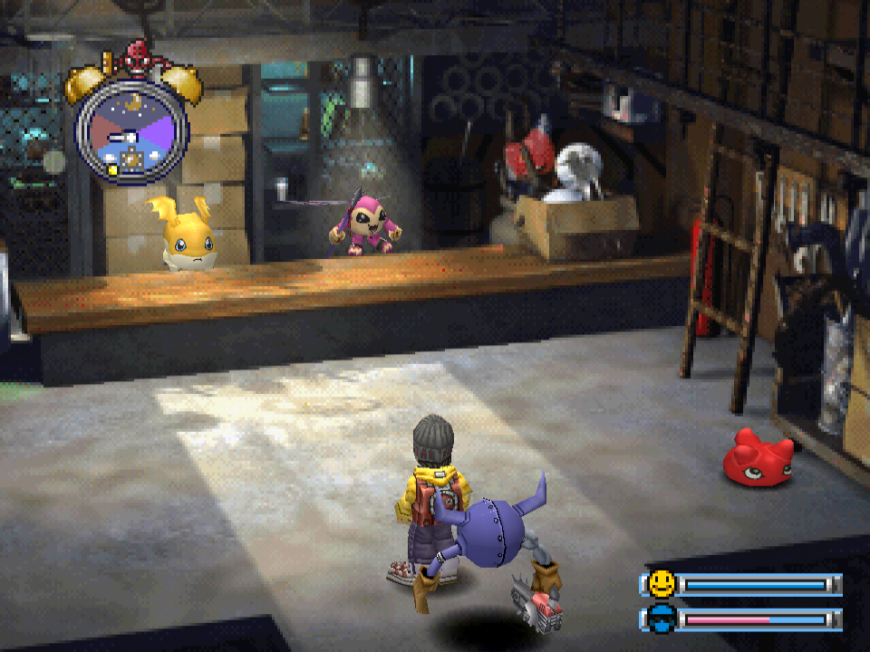
You can randomly encounter him at the store. He sells the training manual for 50.000 bits. If you have the manual in the inventory you get better stats while training.
Airdramon
At 50PP, if you enter jijimon's house and exit, airdramon will challenge you to a fight. He will attack you for 10% of your digimon's max healt. After beating machinedramon (mt infinity) he will be recovered from the fight and will be a fortune teller at the arena.
Ninjamon
Drops quick chip
You can find it on the way to kunemon's bed once you have someone in the secret shop. Accept the fight and beat him. Provides general information of items.
Etemon
Drops brain chip
very strong, 5000hp. At 50pp go south from kunemon's bed and etemon will appear in front of the door. He will do 30% of your digimon's max health as a surprise attack (it will never kill).
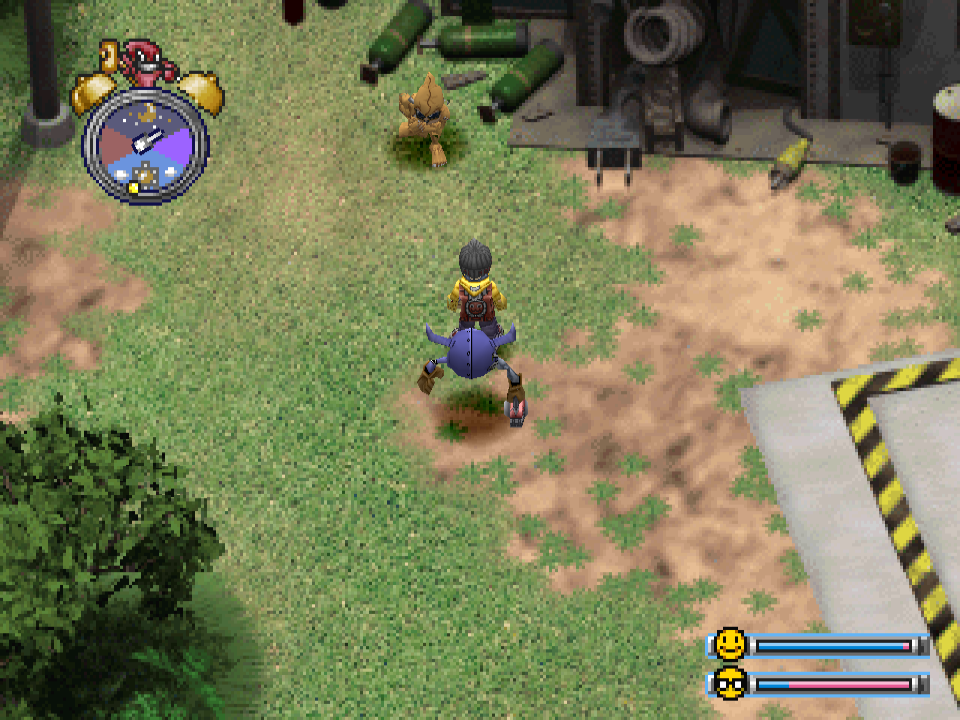
Win the fight and he joins the city. He sells golden bananas for 50.000 bits, an item that turns your digimon into etemon, west of the digimon bridge.
Metalmamemon
Drops def.chip
5000hp, enter and exit the second screen at factorial room over and over until you don't find the brown digimon. You have the option to fight, accept the fight and beat him and he will join the city. He's an alternative curling opponent.
Mamemon
Drops quick chip - Full potential can learn
5000hp. Go back and forth at panorama plains until there's no digimon. You will find mamemon, you have the option to fight. Beat him and he will join the city. Sells booster disks at the secret store.
Nanimon
The first time you encounter him he drops a keychain so you can hold up to 20 items. The last time you encounter him he drops another keychain so you can hold another 20 items. Joins the city after seeing him in all 5 locations, doesn't matter the order.
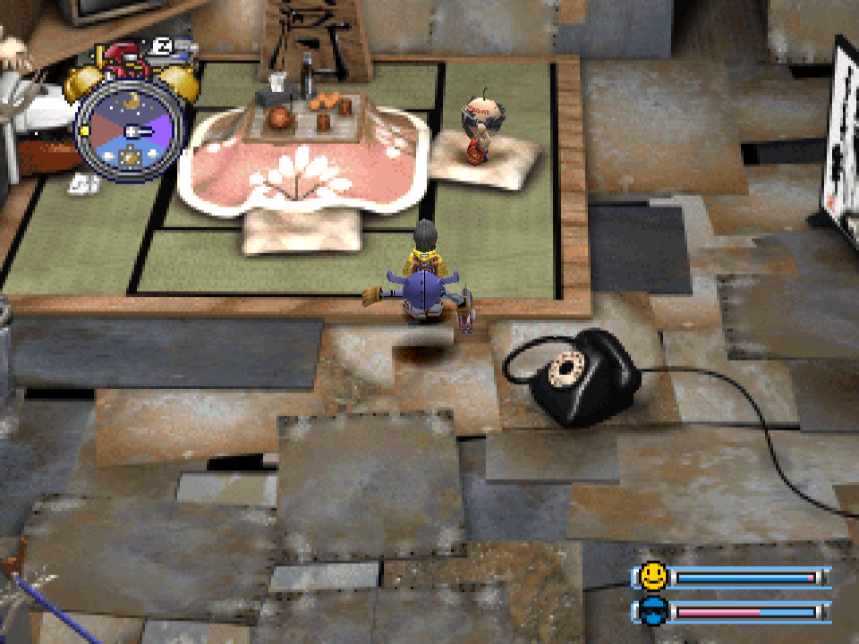
Ogremon's fortress
After beating ogremon at ogremon's fortress, entering from the entrance door (doesn't work if you enter through the elevator)
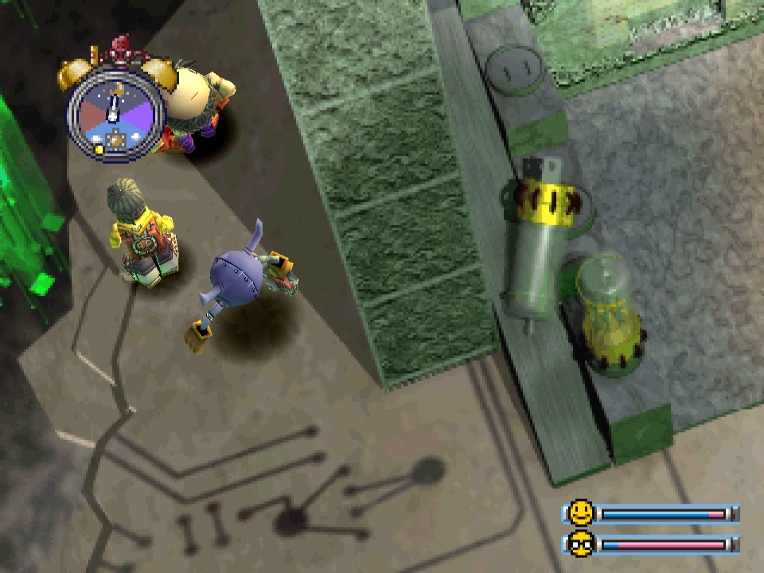
Leomon's cave
After recruiting leomon come back to drill tunnel and enter leomon's ancient cave to find him on the left side.
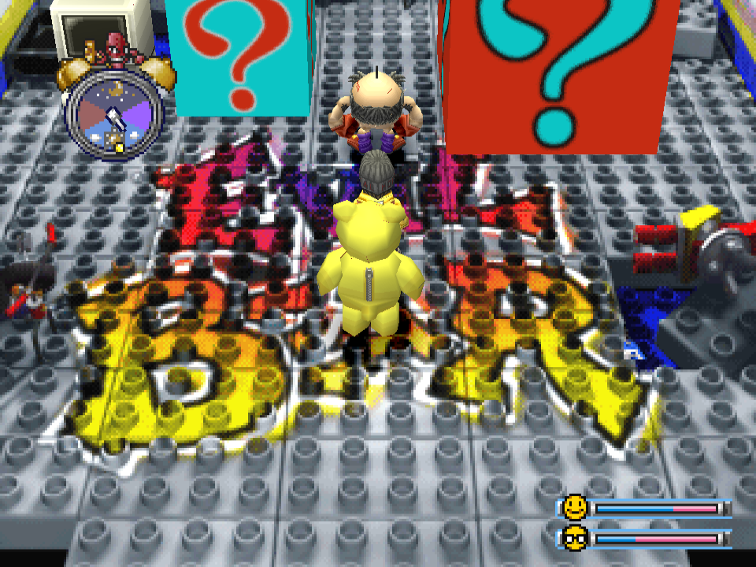
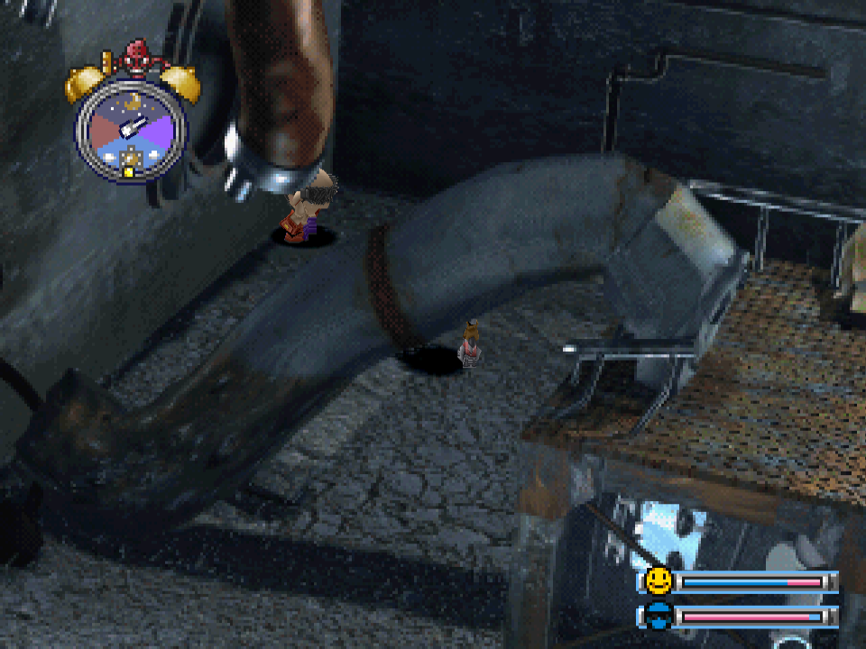
Factorial sewers
After andromon's recruitment you will find nanimon hidden in the second screen of the sewers.
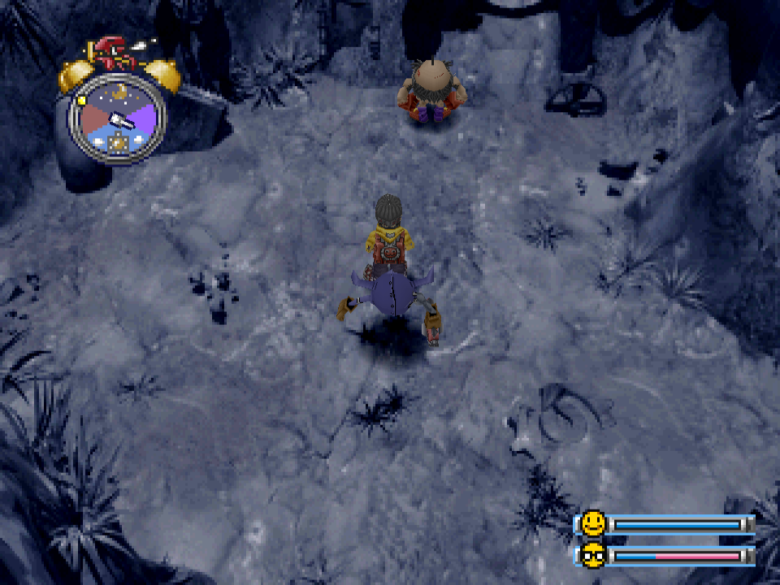
Speedy ancient region
After recruiting tyranommon go back to the place where you fought the goburimon to find nanimon there.
Toy mansion
After recruiting waru monzaemon enter the toy mansion and go back to his room where you found the boxes.
Back dimension
After beating machinedramon, ogremon's fortress will turn into the back dimension. At the very end you will find machinedramon right before ogremon's room. Beat him and you will receive a chained melon from jijimon (item that increase lifespawn by 20h). Every 22nd day backdimension comes back. Each time you beat it you get a chain melon.
Devimon
Drops quick chip
You can find devimon on the 6th floor. On the first screen, you can make it past the three monochromon if you tab left and down slowly. On the 4th floor you have to hold left on the black screen to avoid the garurumons. The items are not relevant in this entire section.
Megadramon
Drops off. Chip
On the 9th floor you have to hold up in the black screen to not run into the digimon. Megadramon will be waiting on the 11th floor. Pick the second option and fight him.
Metal greymon
Drops def. Chip
Pick the items on the TV that were behind megadramon (HP Chip, MP Chip). There will be metal greymon on the next floor right before the final boss.
After beating Metal greymon you will have to fight machinedramon, the final boss (not recruitable). Once you beat him, you finish the game and you can save. You will see the ending cutscene and you can load your game to enter the world again and finish recruiting if you had some digimons left. You will receive a medal, tamer level will go up and you will get a machinedramon card.
Digitamamon
Drops quick chip
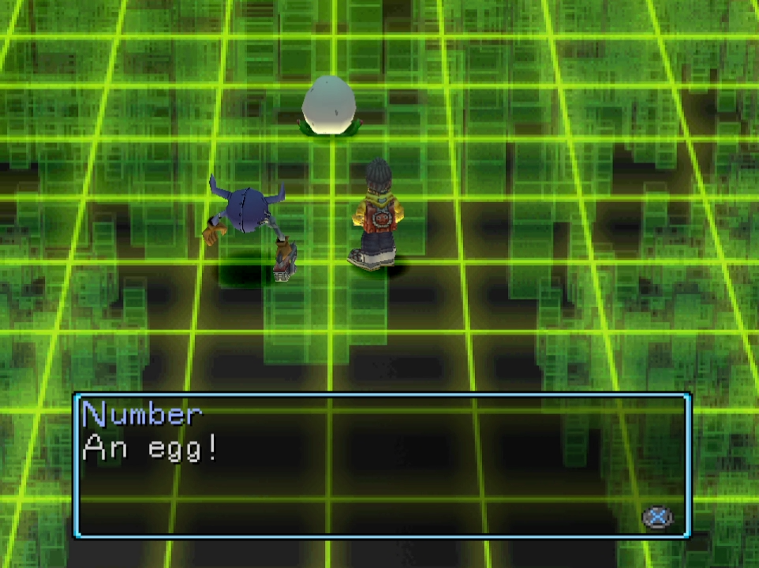
Once you defeat machinedramon and finish the game, go back to mt infinity and you will find digitamamon in the last screen where you fought machinedramon.
Digitamamon joins the restaurant. You can keep on feeding your digimon over and over once he is hungry so you can use this for high weight requirement.